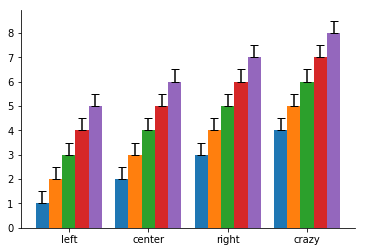
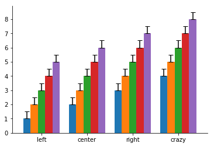
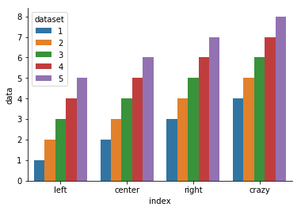

Hide the box around graphs¶
[1]:
%matplotlib inline
import matplotlib.pyplot as plt
import numpy as np
plt.style.use({'axes.spines.top': False, 'axes.spines.right': False})
Bar Graphs¶
Here is a sample bar graph in matplotlib
We’ll start by creating some mock data
[2]:
xvalues = np.arange(4) + 0.5
data = np.arange(1, 5)
lower = np.zeros(4)
upper = 0.5*np.ones(4)
sem = [lower, upper]
labels = ['A', 'B', 'C', 'D']
edges = ['k']*4
And now the plot. Note that there are only upper bounds on the error bars because zeros were passed for the lower values by defining sem as a list with two sets of values.
[3]:
plt.bar(xvalues, data, yerr=sem, tick_label=labels,
color='y', edgecolor=edges, capsize=10)
plt.xlabel('condition')
plt.ylabel('value')
plt.title('Demo');

Multibar graphs¶
Here is a function that returns a multi bar graph
[4]:
def multi_bar_plot(data, labels=None, errors=None, capsize=20):
''' make a multiple bar plot
data: list of values
labels: list of x_axis labels
err: list of values for error bars
'''
fig = plt.figure()
bars = len(data)
width = 1/(bars + 1)
x = np.arange(len(data[0])) - width*(bars-1)/2
if labels is None:
labels = np.arange(len(data[0]))
if errors is None:
for heights in data:
plt.bar(x, heights, width=width)
x += width
else:
for heights, err in zip(data, errors):
plt.bar(x, heights, width=width, yerr=err, capsize=capsize/bars)
x += width
if labels is not None:
plt.xticks(np.arange(len(data[0])), labels)
else:
plt.xticks(np.arange(len(data[0])))
return fig
And some data to test it ….
[5]:
data1 = np.arange(4) + 1
data2 = data1 + 1
data3 = data2 + 1
data4 = data3 + 1
data5 = data4 + 1
data = [data1, data2, data3, data4, data5]
error1 = np.asarray([0.5]*len(data1))
error0 = np.zeros_like(data1)
temp = [error0, error1]
err = [temp]*len(data)
labels = ['left', 'center', 'right', 'crazy']
fig = multi_bar_plot(data, labels, err);

Bar graphs with Pandas¶
[6]:
import pandas as pd
df = pd.DataFrame({'data1': data1, 'data2': data2, 'data3': data3, 'data4': data4, 'data5': data5},
index=labels)
df.plot.bar(rot=0, legend=False, width=0.8, yerr=err, capsize=4)
[6]:
<matplotlib.axes._subplots.AxesSubplot at 0x8a73400>

Bar graphs with Seaborn¶
We need to convert wide format data to long format (tidy) to work well with Seaborn. If we included all of the data, Seaborn would calculate error bars for us.
[7]:
import seaborn as sns
df2 = pd.wide_to_long(df.reset_index(), ['data'], i='index', j='dataset').reset_index()
sns.barplot(x='index', y='data', hue='dataset', data=df2)
[7]:
<matplotlib.axes._subplots.AxesSubplot at 0x9975dd8>
